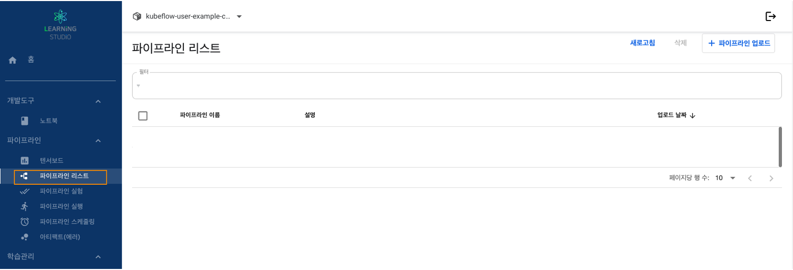
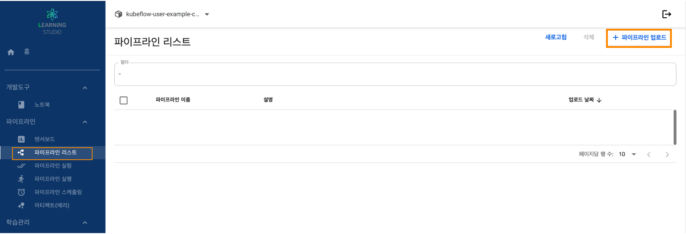
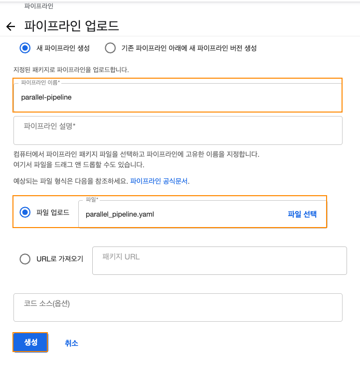
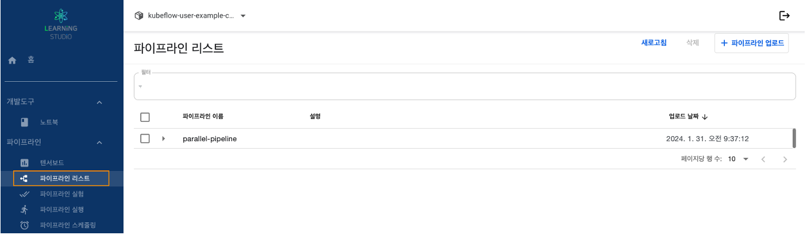
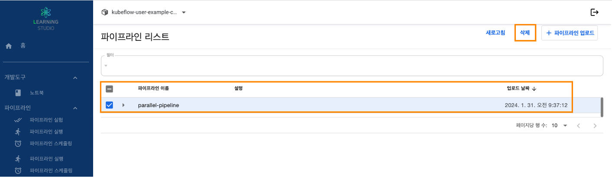

러닝스튜디오 기능별 가이드
Learning studio Manual
개요
파이프라인은 컨테이너 기반의 end-to-end ML워크플로우를 만들고 배포할 수 있는 쿠버네티스 플랫폼입니다.
- 컨테이너 기반으로 구성되어 있게 때문에 확장성 및 재사용성 가능
- 사용자가 파이프라인을 개발한 후 파이프라인을 통해 업로드 및 공유 가능
- 사용자가 작성한 파이프라인 컴포넌트는 Docker 이미지로 패키징되며, 그래프의 결합 형태에 따른 순서대로 실행
- 파이프라인이 실행되면 시스템은 [ 각 단계에 맞는 쿠버네티스 파드 실행 > 파드는 설정된 컨테이너를 실행 > 컨테이너 내부에 있는 애플리케이션을 실행 ] 시킵니다. 스케쥴러에 따라서 순서대로 컨테이너들이 실행됩니다.
파이프라인 구성
- 실험(Experiment), 잡(Job), 런(Run)을 추적하고 관리하는 사용자 dlsxjvpdltm
- ML워크플로우 단계별 스케쥴링 엔진
- 파이프라인과 컴포넌트들을 생성하는 SDK
- SDK와 연동하는 주피터노트북
파이프라인 실행 방식
- Python SDK : 파이프라인 DSL를 통해서 컴포넌트를 작성
- DSL Compiler : 파이썬 코드를 쿠버네티스 리소스 양식(YAML)로 변환
- Pipeline Service : 큐버네티스 리소스 양식에서 파이프라인을 생성하기 위해 Pipeline Service를 호출
- Kubernetes resources : Pipeline Service는 쿠버네티스 API 서버를 호출하여 파이프라인을 실행하기 위한 쿠버네티스 리소스를 생성
- Orchestration controllers : 오케스트레이션 컨트롤러는 쿠버네티스 리소스에 정의된 파이프라인을 실행하기 위한 컨테이너를 실행(파드 내부에서 실행)
- Artifact storage : 실행된 파드는 파이프라인의 실험정보들을 담은 Metadata를 준비된 database(mysql)서버에 담고 그 외의 큰 사이즈의 정보는 Minio 서버 또는 스토리지에 저장
- Pipeline web server : 실행된 파이프라인은 웹UI에서 진행 상황과 생성되는 데이터 및 정보 등을 확인
Step 1. 파이프라인 리스트 보기
1. 러닝스튜디오 대시보드 접속합니다.
2. 좌측에 메뉴에서 파이프라인 → 파이프라인 리스트 탭을 선택입니다.

Step 2. 파이프라인 업로드
1. 러닝스튜디오 대시보드 접속합니다.
2. 좌측에 메뉴에서 파이프라인 → 파이프라인 리스트 탭을 선택입니다.
3. 우측 상단에 파이프라인 업로드


| 항목 |
설명 |
| 파이프라인 이름 |
파이프라인 업로드 파일명 기준으로 자동 생성 |
| 파일 업로드 |
파이프라인 업로드(YAML,Zip, tar.gz 형식 |
4. 파이프라인 리스트 확인.
Step 3. 파이프라인 삭제
1. 러닝스튜디오 대시보드 접속합니다.
2. 좌측에 메뉴에서 파이프라인 → 파이프라인 리스트 탭을 선택입니다.

